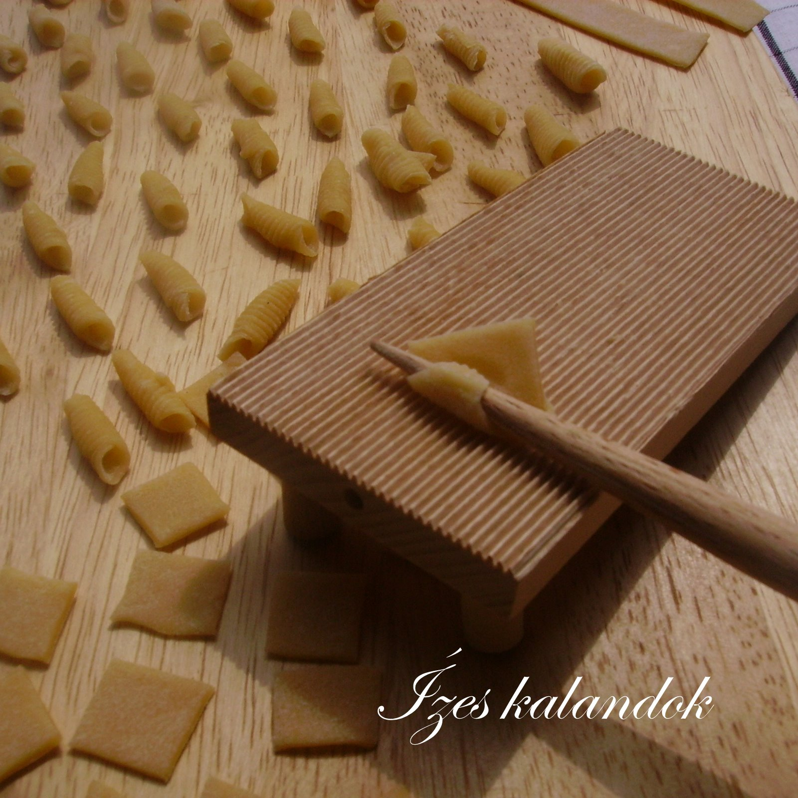

Csigatészta készítő
A gépek már ezt is cserélik fel, hiszen úgy hatékonyabb de nem szabad elfelejteni a régi szép időket amikor még mindeki maga készítette a csiga tésztát.
Ilyen a gépesített

És ilyen a régóta bevált
|
Elérhetőségeink: Telefon: 70 167 5284 Email: pelda@gmail.com Facebook: @atevelemenyed |
Kérdés/vélemény írása: |